Introduction - EXTERIOR LIGHTING
- Path
- Descriptions > 55 ELECTRICAL EQUIPMENT > 5540 EXTERIOR LIGHTING > Introduction - EXTERIOR LIGHTING
- Kind
- system description
- Applies to
- all engines; all production periods
- Interactive page
- https://sloeber94.github.io/elrnDB-a147/en/#/3026115
Applies to: all engines; all production periods
LOCATION OF COMPONENTS ON VEHICLE
The vehicle components and their location are illustrated below.
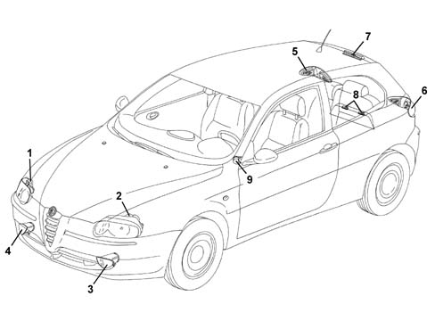
1 - Right front light cluster 2 - Left front light cluster 3 - Left front direction indicator 4 - Right front direction indicator 5 - Right rear light cluster 6 - Left rear light cluster 7 - Third brake light 8 - No. plate lights 9 - Headlamp alignment control panel
COMPOSITION
The vehicle's exterior lighting system has been designed with two aims in mind:
- to ensure maximum efficiency in terms of complying with international regulations which define the illumination specifications of the various components
- to blend in with the design of the vehicle so that the various components reflect the image.
In particular, the front light cluster includes the separate function of the side light, dipped headlamp, main beam headlamp and fog lights in a single unit.
The clear element is made out of one piece of plastic.
TAIL-LIGHT CLUSTER
The vehicle's exterior lighting system has been designed with two aims in mind:
- Ensuring maximum efficiency in terms of complying with international regulations which define the illumination specifications of the various components
- To blend in with vehicle design so that the various components enhance the image.
- The exterior aesthetic appearance is polychromatic in line with the vehicle. The functional selection is a light cluster assembled from a fixed section and a moving section.
The light cluster carries out the following lighting functions:
Signals on fixed section:
- Red incoroporated side light and brake light.
- Orange direction indicator and reflector grouped together.
Signals on moving section:
- 1 red coloured (left) rear fog lamp
- 1 white coloured (right) reversing light
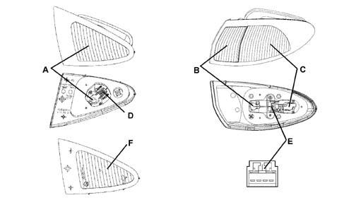
A - Reversing light 12V - 12W (right side only) B - Direction indicator 12V - 21W C - Side light 12V - 5W and brake light 12V - 21W (bilux bulb) D - Connector D E - Connector E F - Rear fog lamp 12V - 21W (left side only) right light cluster CONNECTOR D PIN-OUT 1 - Rear fog lamp 2 - Earth CONNECTOR E PIN-OUT 1 - Earth 2 - Direction indicator 3 - Brake light 4 - Side light
Moving light cluster lens cover (F): white (right) reverse or red (left) fog light
Fixed light cluster lens cover (B) (C): two tone orange/red
Fixed light cluster
This is made from Alfa red coloured heat resistant ABS. It contains two reflective, parabolic chambers with brake/side light functions (bilux bulb with two filaments 12V - 21 - 5W bayonet fitting) and a direction indicator (single filament bulb 12V - 21W). And a non parabolic chamber for housing the reflector. It also contains the housing for the sealed, watertight bulb holder; and the housing for the three fixing studs. The component is fastened to the side panel.
Moving light cluster
It is in Alfa red. It contains a parabolic reflective chamber for the right reversing light function (single filament bulb 12V - 21W) and the left rear fog lamp (single filament bulb 12V - 21W) (reversed for right hand drive versions). It also contains the housing for the bulb holder. The seal and the housing for the three studs. The component is fastened to the outside of the tailgate.
FRONT DIRECTION INDICATORS
Below is an illustration of the front direction indicators.
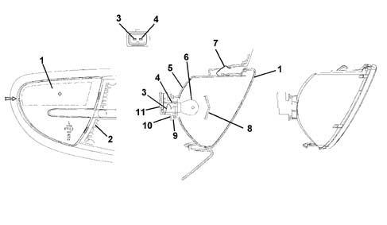
1 - Lit surface smoked lens cover 2 - Bumper grille 3 - Supply terminal 4 - Earth terminal 5 - Casing 6 - Left front direction indicator 12V - 21W 7 - Attachment spring 8 - Screen 9 - O-Ring 10 - Bulb holder 11 - Bulb holder cap
Use a screwdriver when replacing the front direction indicator bulb applying leverage at the point shown by the arrow to extract the complete lens cover outwards. This operation should be carried out very carefully in order not to damage the paintwork. Place a cloth between the screwdriver and the actual bodywork.
SIDE DIRECTION INDICATOR
The side direction indicator is illustrated below.
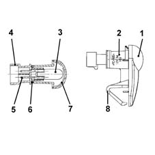
1 - Grey casing 2 - Orange lens cover 3 - Bulb 12V - 5W 4 - Bulb holder 5 - Contact terminal 6 - O-Ring 7 - Prism 8 - Fastening spring
To replace the small bulb, push the lens cover, by hand, in the opposite direction to the direction of travel of the vehicle in order to compress the fastening spring (8). Release the front section and extract the unit. Rotate the bulb holder in an anti-clockwise direction and extract it from the lens cover.
NO. PLATE LIGHT
The no. plate light is illustrated below.
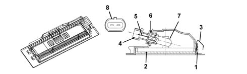
1 - Casing 2 - Lens cover 3 - Spring 4 - Bulb holder casing 5 - Contact 6 - Seal 7 - All glass bulb 12V - 5W 8 - Connector housing
The number plate light function is achieved by means of two single bulb lights fitted by a metal spring. Each light has an all glass 12V - 5W bulb which is replaced by removing the light from the trim and the bulb holder from the number plate light.
The black coloured casing has housings for fastening to the trim. The polycarbonate lens cover is colourless and is ultrasonically welded to the actual casing.
ADDITIONAL BRAKE LIGHT
The additional brake light function is achieved through a multi-bulb lamp and light beam coming out of the rearscreen serigraphy, fitted on the upper part of the tailgate trim which has a luminous surface.
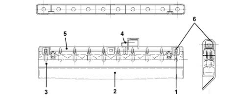
1 - All glass bulb 12V - 2.3 W 2 - Lens cover (red) 3 - Parabola body (black) 4 - Connector 5 - Bulb holder cover (black) 6 - Bulb attachment housing (2-way)
The casing is made of black bayblend, it contains the bulb holder which is in one piece and is fastened to the actual casing. The internal current carrier tracks are made from brass with a copper covering and, with the circuit activated, supply 10 small all glass type 12V - 2.3W bulbs. The light cluster has two housings for fastening to the tailgate. The red coloured acrylate lens cover is fitted to the light cluster casing and its shape and outline give a masked effect with the light off if viewed from outside the vehicle.
The bulbs can be changed, with the light cluster fitted, through the service cover by opening the tailgate.
Fitting brake lights (left/right)
The BRAKE switch has three functional stages:
- (1a) first condition: with the pedal released the pins (1 and 3) are closed:
- (2a) second condition: during the travel of the switch there is an intermediate position in which the pins (1 and 3) and (2 and 4) are simultaneously closed;
- (3a) third condition: with the pedal depressed the pins (2 and 4) are closed.
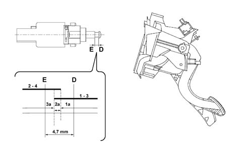
Brake light switch PIN-OUT
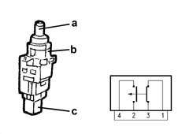
1 - From fuse F35 dashboard control unit (int. key) 2 - From fuse F37 dashboard control unit (int. key) 3 - From PIN 20 n.c. ABS control unit (NFR) 4 - From PIN 15 dashboard control unit Body Computer - Selespeed control unit - PIN 69 n.a. - 3rd brake light)
Switch: dual contact brake a- black b- white c-black
Normal brake switch a- black c- white
Clutch switch a- white c- black
Brake lights wiring diagram:
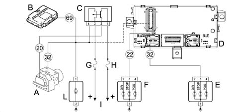
A - Braking system control unit (NFR) or ABS B - Selespeed control unit (NGR) C - 4-way brake switch with normally closed (n.c.) contacts for (VDC) function, normally open (n.a.) for brake-ABS-Selespeed function D - Body computer E - Right brake light F - Left brake light G - 7.5 A fuse F35 H - 10 A fuse F37 I - Supply lines from dashboard control unit L - 3rd brake light
The brake lights function is activated with the ignition key in the ON position (INT) with voltage.
Position of switch 1 - 3 normally closed (n.c.) with pedal released
Position of switch 2 - 4 normally open (n.a.) with pedal released
When the pedal is pressed:
- The voltage signal at PIN 20 of the ABS control unit (NFR) is removed
- The body computer receives a voltage signal and recognizes from this that the position of the brake pedal differs from the rest position (pedal released) and it supplies the brake lights
The body computer (NBC) is capable of recognizing the following irregularities:
- Open circuit (bulb missing or wiring broken) which can be diagnosed if there is no command
- Short circuit to earth (bulb short circuited or wiring short circuited to GND)
- Short circuit to +VB (wiring short circuited to Vbatt)
The continuity of the fuse protecting the bulbs is also checked.
Brake lights position check
The diagram below illustrates the position of the brake lights.
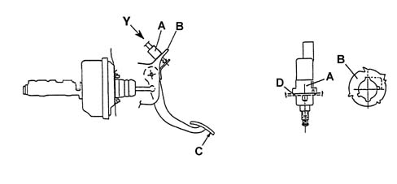
A - Switch B - Bracket (seen from Y housing detail) C - Load application point D - Retaining tooth
1 - Press the brake pedal and fit the brake lights switch (A) on the bracket (B).
2 - Position the switch on the bracket rotating it about 90° in an anti-clockwise direction until you hear the retaining tooth D click which means it is attached to the fitting on the bracket B.
3 - Release the brake pedal and pull it backwards with a load applied at point C of 4 +/- 20% daN so that the brake servo push rod is in the end of travel position (rest position) and the button is in the correct position in relation to the switch casing.
4 - Move the brake pedal through its full travel to allow the switch A to bed in.
5 - Connect the electrical connection.
6 - Check that the brake lights switch is correctly adjusted in the following conditions: brake lights off with brake pedal released in rest position and pedal capable of completing its entire return travel allowed by the brake servo without being prevented by the switch.
CENTRE SWITCH CONTROL PANEL
The control panel is an electro-mechanical and electronic unit with LEDs which come on at night and LEDs which light up the ideograms and controls described below.
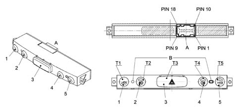
1 - Tailgate release button 2 - Fog lights control button 3 - Hazard warning lights control button (HAZARD) 4 - Rear fog light control button 5 - Central locking control button T2 - green LED signalling fog lights on T3 - red coloured LED with hazard warning lights ideogram (night) Ideogram with red flashing warning light which is brighter when the function is switched on T4 - two tone amber-yellow LED lit up when rear fog lamp is on T5 - two tone amber-yellow LED lit up when central locking function is on and red when alarm function is on T1-T2-T4-T5 - LEDs lighting up ideograms at night with red reduced brightness B - centering housings in climate control trim
CONNECTOR A PIN-OUT:
- 1 - Positive signal for hazard warning lights LED (flashing) from (NBC)
- 2 - Earth
- 3 - Negative signal for hazard warning lights control button from (NBC)
- 4 - INT (ignition key) fuse F49 (dashboard control unit) for control lights
- 5 - Negative signal from fog lights control button
- 6 - Negative signal from rear fog lamps control button
- 7 - Negative signal from central locking opening/closing control button
- 8 - N.c.
- 9 - N.c.
- 10 - Negative signal from boot opening control button
- 11 - Positive signal for deterrent LED (alarm on)
- 12 - Negative signal for central locking on LED
- 13 - Positive signal for rear fog lamp warning light LED
- 14 - Negative signal for fog lights warning light LED
- 15 - N.c.
- 16 - N.c.
- 17 - N.c.
- 18 - N.c.
Switching on direction indicators with warning lights
The direction indicators function is activated by the following enablements:
- 1- The ignition key in the ON position (INT) with voltage
- 2 - The body computer (NBC) receives commands in the form of earth signals to turn on the left direction indicator or the right direction indicator using the steering column switch unit
- 4 - It is always the body computer which manages the frequency (about 90 cycles +/- 15 per minute) which is sent to all the bulbs on the branch activated.
- 5 - When the function is activated the left and right direction indicator warning lights in the instrument panel are lit up: the instrument panel (NQS) switches on the appropriate warning lights in harmony with the messages coming from the body computer (NBC).
Switching on hazard warning lights and warning light
The body computer (NBC) receives an instruction to activate the hazard warning lights from the unstable type button in the centre panel. It is an earth signal. The flashing frequency of the lights; the flashing mode of the warning lights in the instrument panel (NQS) is identical to the description for the direction indicators function, but with the difference of all the direction indicators coming on at the same time.
An LED at the back of the control switch (HAZARD) also comes on when the outside lights are flashing.
Direction indicators/hazard warning lights auditory signal
At the same time as the direction indicator warning lights in the instrument panel (NQS) flash, there is also a low frequency auditory signal which produces a noise of around 50 dB (decibel) at 100 cm. The auditory signal is produced by a relay in the body computer 9NBC) capable of creating an acceptable noise.
Switching on fog lights (relay t14)
The fog lights function is activated by the following enablements:
- 1 - Ignition key in ON position (INTA/A) and (POS) with voltage
- 2 - Switch on the side lights (at the steering column switch unit)
- 3 - Press for at least 50 msec. the fog lights control button
- 4 - Earth signal sent by the body computer (NBC) to the relay (T14) coil located in the engine compartment control unit which, on closing, lights up the fog lights (LED T2 is lit up green to show that the function is activated)
The fog light can be switched off if there is no signal (INT/A) or side lights control signal or by pressing the fog lights control button again for at elast 50 msecs.
Switching on left rear fog lamp with warning light
The rear fog lamps function is activated by the following enablements:
- 1- The ignition key in the ON position (INT) with voltage
- 2 - Switch on the side lights (at the steering column switch unit)
- 3 - Activate the headlamps (dipped or main beam) or fog lights
- 4 - Press the rear fog lamps control button for at least 50 msecs.
- 5 - When the earth signal is received from the rear fog lamp button, the body computer (NBC) activates the light in the left light cluster. The warning light incorporated in the actual switch comes on the entire time it is operational.
Switching on reversing light
The reversing light function is only activated with:
- 1 - The ignition key in the ON position (INT) with voltage
- 2 - The bulb supplied directly by the reversing light switch via the dashboard control unit (CPL)
- 3 - The body computer (NQS) makes the reverse gear engagement status available to the CAN network. The information is used by the NIT (navigation system).
STRUCTURE OF FRONT LIGHT CLUSTER (HEADLAMPS AND FOG LIGHTS)
This unit consists of:
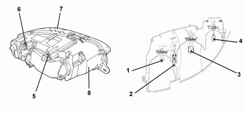
1 - Main beam headlamp 2 - Concealed source side light 3 - Dipped headlamp with dimmer 4 - Fog light with dimmer 5 - Bevel pinion / adjustment screw for headlamp horizontal axis 6 - Bevel pinion / adjustment screw for headlamp vertical axis 7 - Lens cover 8 - Headlamp casing
The front light cluster is constructed using a fixed, transparent lens reflection technology for all functions (side light, dipped headlamp, main beam headlamp and fog light).
The casing is made from grey coloured polypropylene and has three points with metal inserts to guarantee the torque tightening on the metal crossmember. It contains two labyrinths in the lower part and a vent in the upper part which allow effective ventilation and drainage of condensation. It contains special housings where the parabolas and the vertical and horizontal adjustment units with direct systems without idlers are mounted. The unit incoroporates an automatic type electric corrector (electric motor) for controlling the headlamp alignment with the controls in the dashboard. The reflecting parabolas are made from a metallic, heat resistant material and are covered in clear paint which has a protective function.
There are 3 mm cylindrical prisms on the rectangular parts of the reflector at the bottom to reduce the static light. There are housings in the parabolas for the bulb holders and the retaining springs.
Bulbs present:
- 1 - H7 halogen for main beam headlamps 12V-55W
- 2 - All glass for the side lights 12V-5W
- 3 - H7 halogen for the dipped headlamps 12V-55W
- 4 - H1 halogen for the fog lights 12V-55W
There is a dimmer in front of the dipped headlamp and fog light bulb to prevent direct and static rays.
The side light is the concealed source type with the reflection as even as possible throughout the reflector.
The (glass) lens cover is made from colourless, lacquered, polycarbonate which has undergone scratch-resistance treatment; it is fastened to the casing by means of butyl adhesive to ensure that it is impervious to water. It has the task of guaranteeing even, standardized light without any light escaping outside of the designated areas.
Lastly, there are two openings with cover at the rear; one for access to the fog light, the other for access to the other three bulbs (side light, main beam headlamp, dipped headlamp); the cover for the fog light is fastened by an attachment/release mechanism. The other cover is fastened by two springs and has a seal.
Front light cluster
Rear view.
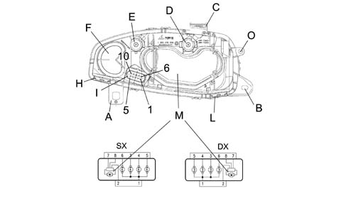
A/B/C - Plastic tabs with metal bushes for fixing headlamp D - Bevel pinion/adjustment screw for headlamp vertical axis E - Bevel pinion/adjustment screw for headlamp horizontal axis F - Cover and seal for fog light housing G - Springs for fastening cover and seal for main beam headlamp/dipped headlamp/side light H/L - Labyrinth openings for draining condensation I - 10 PIN connector (8-way) supplying packard type headlamp M - Alignment motor (incoroporated in light cluster) O - Bodyshell support point PIN OUT 1 - Earth connection for headlamps 2 - Light cluster alignment earth connection 3 - Left/right fog lights control (12V-55W) from engine compartment control unit F30 relay T14 4 - Side lights control (12V-5W) from body computer 5 - Main beam headlamps control (12V-55W) from engine compartment control unit left F15 right F14 relay T02 6 - Dipped headlamps control (12V-55W) from dashboard control unit and instrument anel left F13 right F12 relay T01 7 - Supply for headlamp alignment from dashboard control unit and instrument panel connector left F13 right F12 relay T01 8 - Vertical correction signal for light beam from instrument panel connector and dashboard control unit
There is a kit for replacing the tab (C) if it is broken. If tabs (A-B) are broken, then the light cluster is changed.
OPERATION OF LIGHTS
All the controls for operating the lighting system are located on the steering column switch unit. The user should adjust the main switch (ring nut) to switch on the side lights and the left lever for the main beam/dipped headlamps (for both the stable position and flashing).
The fog lights are switched on by pressing the special button in the centre switch panel.
For further details on the operation of the side lights, main beam/dipped headlamps, fog lights and direction indicators for changing lane, see 5550 MANOEUVRING AND WARNING SIGNALSand 5505A multi-function components.
Automatic switching on and off of side lights/dipped headlamps (follow me home function)
The follow me home function makes it possible to keep the dipped headlamps and the side lights on after the engine has been switched off with the ignition key in the PARK position or with the key extracted for 30 seconds or multiples thereof.
The function is activated:
- 1 - Within 2 minutes of a key off
- 2 - Operate the light flasher lever
- 3 - The dipped headlamps come on and their operation is signalled by the side lights warning light in the instrument panel (NQS) coming on
- 4 - Each time the flasher lever is operated, the time the dipped headlamps remain on is increased by 30 seconds. The system accepts a maximum of 7 commands, i.e. the dipped headlamps/side lights can be activated for a maximum of 210 secs and each time the lever is operated the main beam headlamps warning light in the instrument panel (NQS) should come on
- 5 - Never operate the flasher lever for more than 2 seconds because the system will not immediately recognize that the dipped headlamps have gone out, it is however possible to activate the function by operating the flasher lever again within 2 minutes of the key off
- If the right or left parking lights function is activated, the follow me home function takes priority and at the end of the control time the previous parking conditions are restore
- All the times described above have a tolerance of +/- 5%
- The follow me home function is reset the first time the key is turned to the ON position
Switching on side lights and warning light in panel
The side lights function is activated by two enablements:
- 1 - Ignition key in ON (INT) and (POS) with voltage
- 2 - Steering column switch unit ring nut turned from position (0) to ideogram of bulb with rays lit up The body computer supplies the side lights, two at a time, for the right side and the left side, plus the two no. plate lights. The side lights warning light located in the instrument panel is activated or deactivated by the body computer via the CAN network, the instrument panel (NQS) also has the task of activating the serigraphy night lights.
Since the branches of the side lights are distinct, the body computer is capable of recognizing the following problems:
- Open circuit, or bulb failure
- Circuit to earth (bulb short circutied or wiring short circuited to earth)
- Short circuit to +VB (wiring short circuited to Vbatt)
- 5W bulb replaced by a 21W bulb
Switching on parking lights
The parking lights function uses the side light bulbs and is activated:
- By turning the ignition key to the park position (to do this, press the button on the key, rotate the actual shell upwards and press the switch button). If the left and right direction indicator inputs at the steering column switch unit are deactivated, the side/parking lights, including the no. plate lights and the warning light in the instrument panel (NQS) on both sides come on.
- At the steering column switch unit: 'right direction indicator not activated' and 'left direction indicator activated' only the side/parking lights on the left side are on, the warning light in the instrument panel (NQS) and the no. plate lights remain off.
- At the steering column switch unit: 'left direction indicator not activated' and 'right direction indicator activated' only the side/parking lights on the right side are on, the warning light in the instrument panel (NQS) and the no. plate lights remain off.
The function is deactivated by removing the park position.
Switching on dipped headlamps and warning light in pael (relay t01)
The dipped headlamps function is activated by the following enablements:
- 1 - Ignition key in ON position (15/54) with voltage.
- 2 - Steering column switch unit ring nut turned from ideogram for bulb lit up with rays to ideogram for dipped headlamps (earth signal sent from steering column switch unit to body computer)
- 3 - Earth signal sent from body computer (NBC) to relay coil (T01) located in dashboard control unit which, on closing, lights up the dipped headlamps.
When the dipped hedlamps go out, it keeps the dipped headlamps on (unless there is a specific instruction to switch them off).
If the dipped headlamps and the main beam headlamps are already on and the fog lights are turned on, then the dipped headlamps are switched off.
Similarly, if the dipped headlamps and the fog lights are on and the main beam headlamps are turned on, then the dipped headlamps are switched off.
The strategy does not take into account the 'flasher', in this case if the dipped headlamps are activated they are not switched off.
Switching on main beam headlamps (relay t02)
The main beam headlamps function is activated by the following enablements:
- 1 - Ignition key in ON position (15/54) with voltage.
- 2 - With the ring nut in the dipped headlamps idoegram position, it is possible to switch from dipped and main beam headlamps by pushing the lever towards the dashboard (stable position); an earth signal is sent by the steering column switch unit to the body computer. The main beam headlamps warning light located in the instrument panel (NQS) is activated/deactivated by the body computer via the CAN network.
- 3 - Earth signal sent by the body computer (NBC) to the relay coil (T02) located in the engine compartment control unit which, on closing, lights up the main beam headlamps.
- 4 - The same function as described above is produced by pulling the steering column switch unit lever towards the steering wheel (flashing or unstable lever position) irrespective of the position of the ring nut. (flashing takes place with the main beam headlamps)
ELECTRICALLY CONTROLLED HEADLAMP ALIGNMENT
The diagram below shows the location of the components.
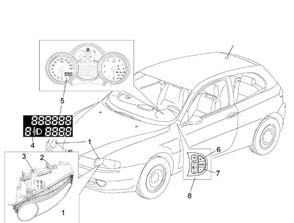
1 - Front light cluster (with headlamp alignment motor incorporated) 2 - Bevel pinion/adjustment screw for headlamp vertical axis 3 - Bevel pinion/adjustment screw for headlamp horizontal axis 4 - Headlamp positino display area on milometer display 5 - Milometer display in instrument panel (NQS) 6 - Adjustment button in left panel from position 3-2-1-0 7 - Adjustment button in left panel from position 0-1-2-3 8 - MODE functions and headlamp alignment control panel
Operation and adjustment (headlamp alignment)
The headlamp alignment adjustment device is designed to correctly position the dipped headlamp light beam, in a vertical direction, irrespective of the load on the axles.
When the ignition key is turned to the ON position, the instrument panel (NQS) does not display either the position (0, 1, 2, 3) or the symbol until the dipped headlamps are activates (lights on).
The condition that appears is the last value memorized when the key was turned from ON to OFF.
When the key is turned ON and the dipped headlamps are on, when the two buttons (5) and (6) in the panel (7) - driver's side to the side of the front air vent - are pressed, it is possible to alter the inclination/orientation of the light cluster in 4 standard positions. The value of the positions is memorized and shown in the milometer (5) display together with the symbol in the instrument panel (NQS).
In practice, when the instrument panel connector receives the increase signal (CAF +) or descrease signal (CAF -) from the driver's side panel (7) buttons (5) and (6), it checks, via a control and adjustment module, whether there is a positive supply for the dipped headlamps coming from fuse F13 of the dashboard control unit (from relay T01); if this is the case, it produces and sends an adjustment signal to the headlamp alignment motors. The instrument panel (NQS) electronic circuitry output signal has a maximum voltage value for position (0) and decreases for the subsequent positions (1- 2- 3) with an identification level which allows the actuator incorporated in the light cluster to be operated to move the parabola.
Headlamp alignment position according to vehicle load
The following loads correspond to the four positions:
- (0) - 1 person (driver), 2 persons (in the front seats)
- (1) - 5 persons, 2 persons (in the front seats), 3 persons (in the rear seats)
- (2) - 5 persons plus maximum load
- (3) - 1 person (driver) plus maximum permissible load in luggage compartment without backrest folded over
The maximum load refers to: the maximum permissible load on the rear axle or: the total permissible load for the vehicle. The weight of a person is considered to be 75 kg.
Headlamp alignment pin-out
The pin-out and the wiring diagram are illustrated below:
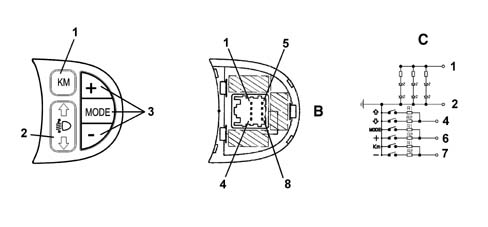
1 - Km zeroing button 2 - Headlamp alignment control 3 - Clock/brightness adjustment controls B - View of connector C - Wiring diagram 1 - Controls light +15 2 - Earth 3 - N.C. 4 - Headlamp alignment control 5 - N.C. 6 - MODE control 7 - KM ZEROING control 8 - N.C.
Headlamp alignment
Each light cluster, depending on its function, is distinguished by one of the following markings on the glass:
- C or HC: light cluster for emitting dipped beam
- R or HR: light cluster for emitting full beam
- CR or HCR: light cluster for emitting both dipped beam and full beam
- B or HB: front fog light
Preparation of the vehicle
Position the vehicle 'empty', with tyres inflated to the full load pressure and with a person in the driver's seat (the weight of a person is considered to be 75 kg), on a flat, horizontal surface, with the reference centre of the headlamps 10 m from the screen. The vehicle should have all supplies (fuel, water, oil) and be equipped with all accessories and tools.
Screen
This should consists of an opaque surface on which the following lines have been traced:
- V-V: verticala, coresponding to the trace of the plane of symmetry of the vehicle;
- C-C: traces of the vertical planes passing through the reference centres of the light clusters C-CR-HC-HCR;
- Hc-Hc: horizontal corresponding to the height from the ground of the reference centres for the light clusters C-CR-HC-HCR;
- Ac-Ac: horizontal 13.6 cm below Hc-Hc (value for new vehicles corresponding to a lowering of 1.36%)
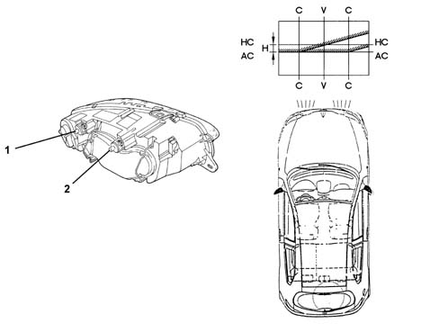
1 - Bevel pinion/adjustment screw for headlamp horizontal axis 2 - Bevel pinion/adjustmtne screw for headlamp vertical axis
Alway start with the horizontal adjustment of the headlamps and then move on to the vertical adjustment. Finer operation than the previous one.
Orientation
Carry out the adjustment of these light clusters on the dipped beam by adjusting the height from the ground for the demarcation line between the area lit up and the dark area and the position of the point where the horizontal section crosses the inclined part of the demarcation line for both the left and right light clusters.
To adjust, proceed as follows:
- (I) Horizontal adjustment: act on the horizontal adjustment device 1 for the light cluster so that the point where the two horizontal and inclined demarcation lines cross over coincide with the point where lines C - C and Ac - Ac cross over on the screen. The maximum permissible movement of the vehicle towards the outside of the screen is 175 mm max (1°).
- (II) Vertical adjustment: act on the vertical adjustment screw for the light cluster so that the horizontal section of the demarcation line between the area which is dark and the area which is lit up by the luminous beam coincides with the line Ac - Ac on the screen.
Rapid adjustment (with photometric equipment)
It is possible to use optic devices to speed up the operations of adjusting the light clusters which reproduce the features on a screen 10 m away. The reference lines conforming to the values for the different vehicles must be traced on each screen for these devices according to the reproduction scale for the actual device.
TYPE OF BULBS FITTED
The diagram below shows the types of bulbs fitted.
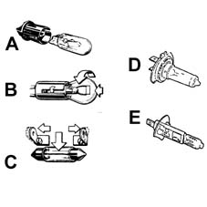
A - All glass bulbs. (12V-2,3W) (12V-5W) They are a press-fit. Pull them to extract them. B - Bayonet fitting bulbs (12V-21W) (12V-5W) (12V - 21/5W) To extract them from the bulb holder: press the bulb, rotate it in an anti-clockwise direction, then extract it. C - Cylindrical bulbs. (12V-10W) (12V-5W) To extract them, release them from the contacts. D-E - Halogen bulbs. (12V-55W H7) (12V-55W H1) To remove the bulb, release the spring fastening the actual bulb to the housing.
When handling halogen bulbs, only touch the metal part. Touching the transparent part of the bulb with your fingers reduces the intensity of the light given off by the bulb and can also adversely affect the life of the actual bulb. In the case of accidental contact, clean the bulb with a cloth soaked in alcohol and leave it to dry.
Halogen bulbs contain pressurized gas; if they break, fragments of glass may be projected.
Bulbs which are not working properly should be replaced with ones of the same type and rating. After this operation, check the headlamp alignment.
Applies to: all engines; all production periods; only with equipment: Proiettori allo xenon
SPECIFCATIONS
GAS DISCHARGE HEADLAMPS
Introduction
The lights play an important role among the vehicle's active safety systems.
The need to improve the performance of current systems, based on halogen lamps, in terms of light energy emitted, spectral range and bulb duration has led to the technological development of gas discharge headlamps and the relevant devices which permit their operation on the vehicle.
Three main advantages have resulted from the development of this technology:
- more efficient brightness permits a reduction in electrical energy when in steady state;
- the high light emission allows the size of the lights cluster to be reduced (particularly the height) offering greater freedom of design of the front;
- on average, the life is double that of a halogen bulb.
The gas discharge headlamp technology has led to the development of a set of devices which, in short, comprise:
- xenon bulb;
- reflecting surface of the headlamp;
- control electronics, consisting of a reactor (igniter) and control unit (ballast);
- automatic light beam adjustment
Light beam (isolux curve) of conventional headlamp
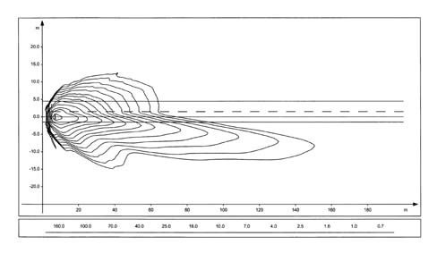
Light beam (isolux curve) of discharge headlamp
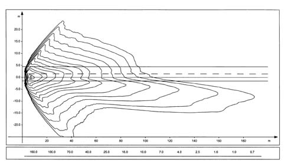
COMPLETE LIGHTS CLUSTER
Each lights cluster contains the components necessary for the operation of the discharge lamp (bulb, reactor, control unit, control motor); the conventional components are also present (side lights, direction indicators, fog lights, main beam).
Cross section of headlamp showing the gas discharge bulb
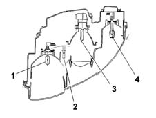
1 - Main beam 2 - Side light 3 - Gas discharge bulb 4 - Fog light bulb
XENON LAMP
The xenon lamp comprises a bulb containing two electrodes a few millimetres apart, and filled with xenon gas at low pressure.
The emission of light is brought about by the striking up of an arc between the two electrodes, which is maintained during the operation of the bulb; this process is similar to what happens in neon tubes in civil applications.
Unlike neon tubes, however, in an automobile application, however, it is unthinkable to have to wait for some minutes before the process stabilises, so the lights cluster has an electronic control device which permits operation, with regard to warm-up time, comparable to conventional headlamps.
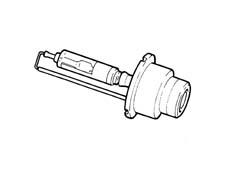
REFLECTIVE SURFACE
The xenon bulb requires a new reflective surface, as the light emission point is shaped and positioned differently compared to the halogen bulb.
The reflector used is of the complex surface type, so with no spherical lens. This surface receives light beams coming from the bulb and orientates them so as to provide a correct light beam distribution.
Control electronics
Each bulb is controlled by electronics consisting of two devices: the control unit (ballast) and ignition reactor (igniter).
The purpose of the ballast is to convert the low-voltage direct current coming from the vehicle's battery into medium-voltage alternating current, and to control the subsystem's operation in closed loop.
The ballast is thus able to control in an optimum way the characteristic voltage-current in the ignition stage, and can deliver to the bulb the power required to for operation in steady state.
The igniter is controlled by the ballast and can generate the high voltage (max 25 kV) necessary for striking up the arc between the electrodes.
The ballast in the left headlamp acts as 'MASTER': it receives the signals from the sensors, processes them and re-transmits them also the ballast of the right 'SLAVE' headlamp.
Wiring diagram
The figure shows a general diagram of the electrical connections
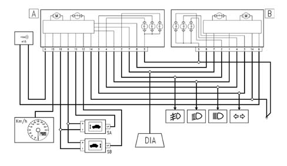
A, MASTER headlamp B, SLAVE headlamp Sa, Front sensor Sb, Rear sensor DIA, Diagnostic socket
Operation
The operation of a xenon bulb is divided into four phases
Ignition
In this stage, the ballast generates a voltage which can strike up a specific device located in the igniter. A voltage step-up circuit transfers the overvoltage, suitably amplified, to the lamp, thus causing a discharge between the electrodes.
Maintaining the arc (take-over)
During this stage (a few seconds), the bulb is supplied with extra power which is necessary to cause the rapid evaporation of the metallic halides contained in the bulb, so as to quickly reach the brightness steady state. Under these conditions, the lamp emits a flash of light of double the normal intensity for a period of about 100 microseconds.
Warm-up
For a period of about two minutes, the ballast regulates the light intensity by measuring the physical state of the bulb from its impedance characteristics (closed-loop check).
Steady state
The light beam is continuously checked in closed loop even in steady state conditions.
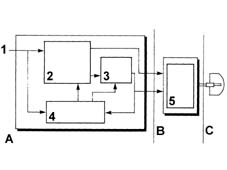
1 - Supply (12 V) 2 - High-voltage generator 3 - Square-wave generator 4 - CPU 5 - Voltage step-up circuit A. Ballast B. Igniter C. Bulb
Automatic headlamp alignment adjuster
Because of the brightness of the beam emitted by the bulb, the vehicle must have an automatic headlamp alignment adjuster to avoid dazzling oncoming vehicles because of changes in alignment. The device intervenes in certain conditions:
- static type, due to load distribution;
- dynamic type, due to acceleration and deceleration.
The automatic adjuster also ensures greater driving comfort, as the lit area remains stable and the eye does not have to constantly adapt to variations in illumination.
The device comprises:
- a stepper motor for each headlamp;
- two load sensors, connected to the front and rear suspension, right side.
Adjustment
This is achieved via the signal of the load sensors which, connected to the suspension, give an indication of the vehicle's load condition.
The control unit is 'activated' whenever the ignition is turned ONand resets the headlamps to the corrrect hight (calculated in relation to the vehicle load), which consists of the full tilting and subsequent positioning of the reflector.
The signals of the load sensors are periodically acquired and suitably averaged so as to proceed, if necessary, with an adjustment of the headlamp position (e.g. fuel consumption during driving). This adjustment is not immediate, but is filtered over time to avoid unwanted adjustments (e.g. potholes, rough road surface, etc.).
This adjustment is also carried out when the lights are off, so that the beam is correctly positioned the moment when the lights are switched on.
Load sensors
The sensors are fixed to the vehicle body, while an appropriately shaped lever follows the movement of the suspension.
The sensor is supplied by the headlamp control unit, and supplies as an output a linear signal proportional to the position of the suspension in relation to the body.
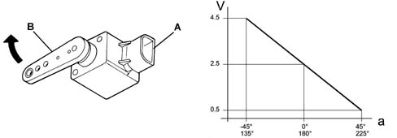
A - Part secured to the body B - Part secured to the suspension lever a - Angle of inclination of the lever V - Voltage of sensor's output signal
Adjustment actuator
A stepper actuator inside the lights cluster carries out the adjustment. This consists of a stepper motor and a screw-nutscrew reduction gear, which transforms from rotary into linear the motion of a pushrod hinged via a spherical ball to the reflective surface.
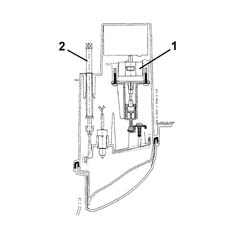
1 - Stepper motor 2 - Manual headlamp adjuster
Self-diagnosis
The electronics which manage the system include a self-test function which continuously checks its operation.
The control unit carries out a continuous autodiagnosis of the system operation. In particular, it detects and memorises any faults.
Faults stored in the control unit memory can be analysed by the Examiner or other diagnostic instruments.
Recovery
The self-test management logic also has the 'recovery' function: if errors are detected, the system no longer works correctly, and so incorrect orientation of the light beam could dangerously dazzle other vehicles.
The light beam is then positioned low so it cannot dazzle under any circumstances, but permits sufficient illumination for safe driving to a garage on the Service Network.
Zeroing
In the case of replacement of a component in the system (headlamp, sensor, etc.), it is necessary to connect up the diagnostic instruments and carry out a self-learning procedure, to automatically reset the system, which must recognise the headlamp correctly algined position (position '0') from which it must make the appropriate adjustments.